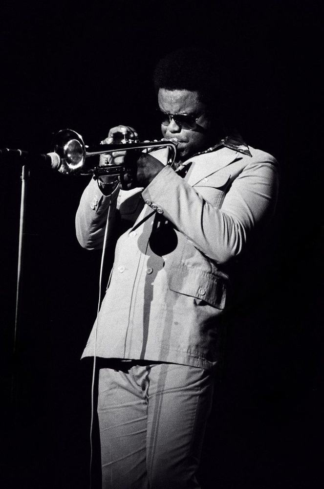

故事
一首1964 年的爵士曲，三十年後變成嘻哈金曲。它是鋼琴手 Herbie Hancock 寫的 Cantaloupe Island。曲子一開頭，鋼琴就反覆彈著同一段短短的節奏。
原曲裡吹短號的，是 Freddie Hubbard。1993 年，英國團體 Us3 把這段鋼琴取樣下來。他們加上嘻哈鼓聲和饒舌，改名叫 Cantaloop。

這首歌打進了美國排行榜前十名。有不少人是聽了 Cantaloop，才回頭去找原曲。下次聽到這段鋼琴，想想它跨過了三十年。
故事後面
Cantaloupe Island 收錄在 Herbie Hancock 一九六四年的專輯，鋼琴不斷重複一段短短的節奏，很適合取樣。
一九九三年英國團體 Us3 把它取樣做成 Cantaloop，加上嘻哈鼓聲和饒舌，打進美國排行榜前十名。
這是爵士和嘻哈接上線的經典例子，很多人因此回頭找原曲。
這樣聽
先聽原曲的鋼琴，再聽 Cantaloop，比比看同一段鋼琴怎麼被重新使用。
逐句英文
A 1964 jazz tune became a hip-hop hit thirty years later.
It was Cantaloupe Island, written by pianist Herbie Hancock.
It opens with the piano repeating one short rhythmic figure.
On the original, Freddie Hubbard played cornet.
In 1993 the British group Us3 sampled that piano part.
They added hip-hop beats and rap and renamed it Cantaloop.
It reached the US top ten.
Plenty of people found the original only after hearing Cantaloop.
Next time you hear that piano riff, think of the thirty years it crossed.
查證筆記與出處
Billboard Hot 100 第九名：條目寫法，請核對。Gemini 稿「原作者覺得改編很酷」查不到出處，已刪。
https://en.wikipedia.org/wiki/Cantaloupe_Island
https://en.wikipedia.org/wiki/Cantaloop_(Flip_Fantasia)
一分鐘影片版在 Instagram @jazz101tw。